O menino das histórias
As histórias vieram muito antes do marketing. Quadrinhos, desenhos animados, filmes, documentários, séries, livros, biografias… ele sempre foi atraído pelas boas histórias.
Existem 2 motivos pelos quais as pessoas não compram seus produtos e serviços:
Um excelente produto ou serviço não são suficientes se a mensagem cansa e confunde antes de convencer. O cérebro descarta tudo o que exige esforço demais.
Nó · StoryFunnels é um sistema de vendas implementado em 4 semanas onde a Soulstory mergulha na sua empresa para extrair as histórias e criar todos os ativos que farão parte do dia a dia das vendas do seu negócio.
Se o cliente não entende por que deveria se importar com a sua mensagem, anúncios, vídeos, design e treinamento de vendas não vão salvar você. Resolver o problema da sua mensagem é onde está o maior retorno sobre o seu investimento.
"O problema do seu negócio não é o produto, o serviço, o atendimento ou o preço. O problema é a confusão da mensagem. Utilizando o poder das histórias, você terá o problema mais desejado."

O sistema de vendas Nó · StoryFunnels troca a mensagem confusa e dispersa por uma mensagem que coloca o cliente como o herói de uma história onde o seu produto ou serviço é o caminho para o final feliz.
Ao final das 4 semanas, o seu negócio terá instalado um StoryFunnel completo em operação, pronto para transformar conhecidos em clientes (e clientes em clientes recorrentes).
Negócios como o seu, com grandes produtos, perdem clientes (e dinheiro) todos os dias porque têm uma mensagem complicada demais, e por isso seus clientes fogem do funil de vendas muito antes da conversão.
O caminho mais rápido para resolver isso, são as histórias.
Framework criado a partir de dezenas de ferramentas de storytelling, validadas pelas maiores empresas do mundo.
Mais de R$ 107.000.000,00 faturados por clientes que adotaram a metodologia.
Quando o cliente é o herói e a sua marca é o guia, as pessoas passam a se importar e param para ouvir sua mensagem.
A maioria dos donos de negócio conhece o produto profundamente demais para explicá-lo de forma simples. Isso vale especialmente para fundadores inteligentes e capazes.
O sistema de vendas Nó · StoryFunnels dá a você o que a sua equipe não consegue gerar internamente.
Especialistas externos que ouvem sua mensagem como um estranho ouviria.
Um passo a passo comprovado, feito para que os clientes entendam, desejem e comprem.
Ativos prontos para implementar, em vez de uma pilha de anotações de estratégia e uma lista de tarefas.
“Antes do Nó StoryFunnels os nossos anúncios simplesmente não convertiam. Não sabíamos o porquê. Depois da Soulstory ficou claro que o problema era a nossa mensagem.”
“O funil de vendas que a Soulstory fez mais do que duplicou o nosso faturamento.”
“O framework que a Soulstory trouxe ajudou a gente a multiplicar o retorno por cada real investido. Foi instantâneo: o funil foi pro ar, o resultado multiplicou.”
Antes de gastar mais dinheiro em marketing, faça o que irá multiplicar o retorno de cada real investido: conserte a mensagem da qual tudo depende.
A implementação do sistema de vendas Nó · StoryFunnels é um projeto pontual, de 4 semanas, que entrega à sua equipe uma mensagem clara, orientação especializada e materiais prontos para usar em vendas, marketing e no seu site.
Respostas rápidas sobre o que o Nó · StoryFunnels inclui, como funciona e se faz sentido para o seu negócio.
Passe o cursor sobre a arte para revelar o princípio por trás do método.
Passe o mouse · toque e arraste no celular